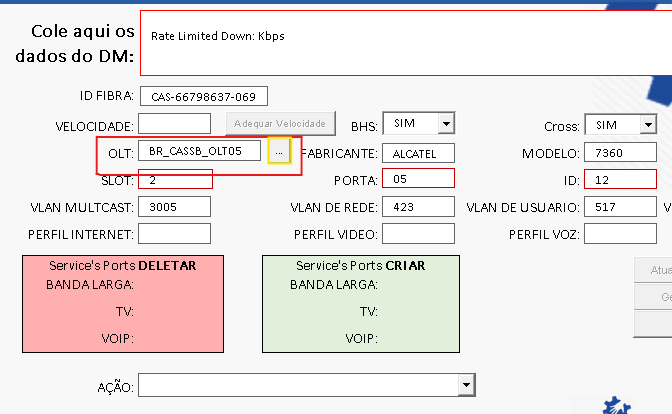
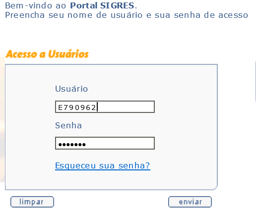
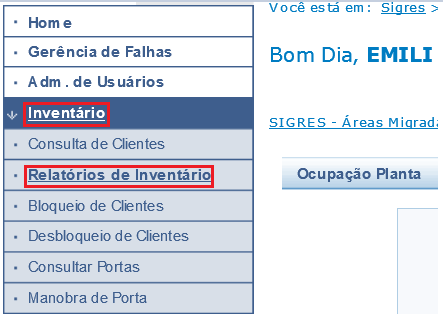
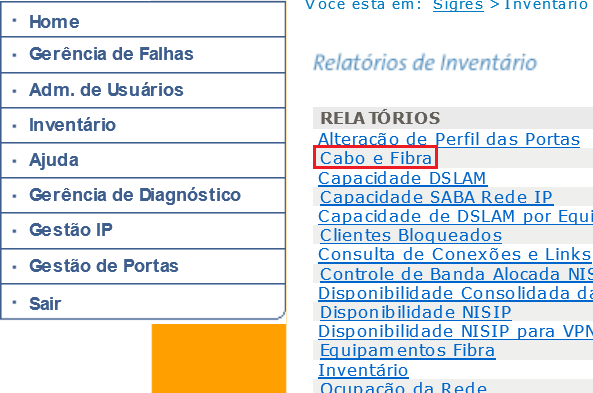
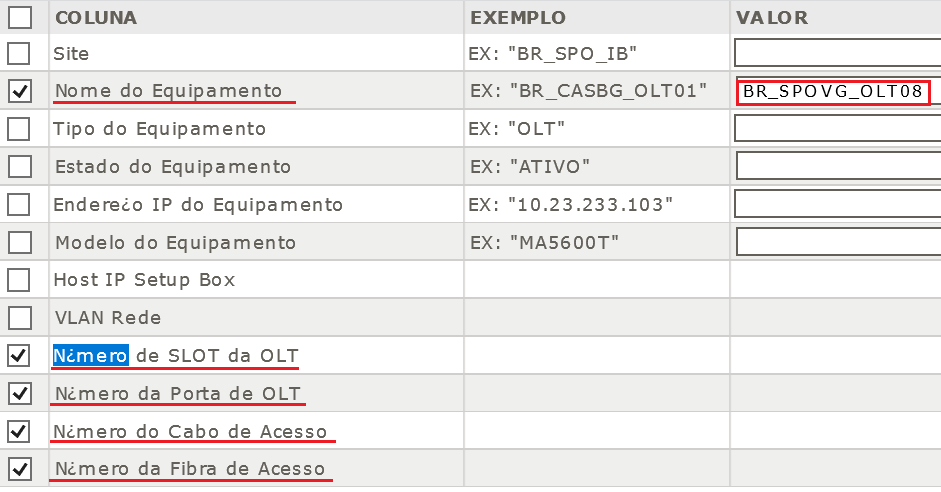

Como verificar alarme via Putty

Como converter Slot e Porta para Cabo e Primária via Helper

Após abrir o sigres é necessário fazer login com seu ELEGAL (EX: E790962) e com a senha.
Após logar no sigres, no canto esquerdo vai aparecer algumas opções: CLIQUE EM INVERTARIO, DEPOIS EM RELATÓRIOS DE INVENTÁRIO
Depois clique na opção "Cabo e Fibra"
>Após passar para próxima tela, é necessário flegar a opção "Nome do Equipamento" e ao lado preencher a OLT aonde o gpon alarmou (EXEMPLO: BR_SPOVG_OLT08). Após é necessário flegar cada uma das opções que começam com "N¿mero" como no exemplo a baixo.
Nesta aba você encontra a OLT, e ao lado o slot e a porta respectivamente nesta ordem, e logo em seguida encontra o cabo e a fibra. EXEMPLO: